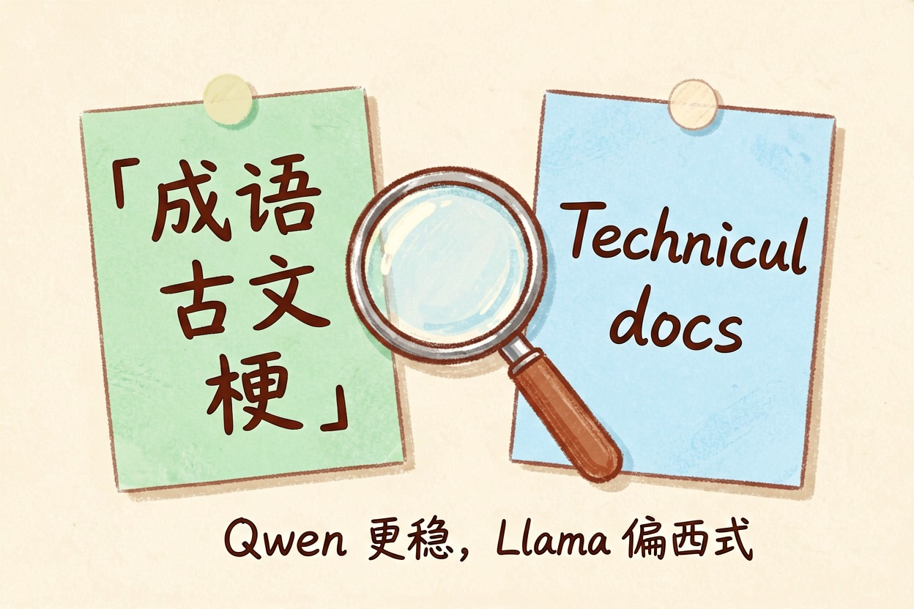
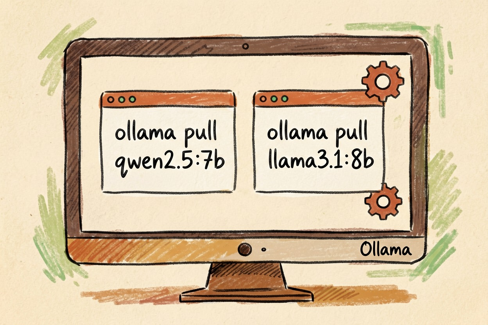
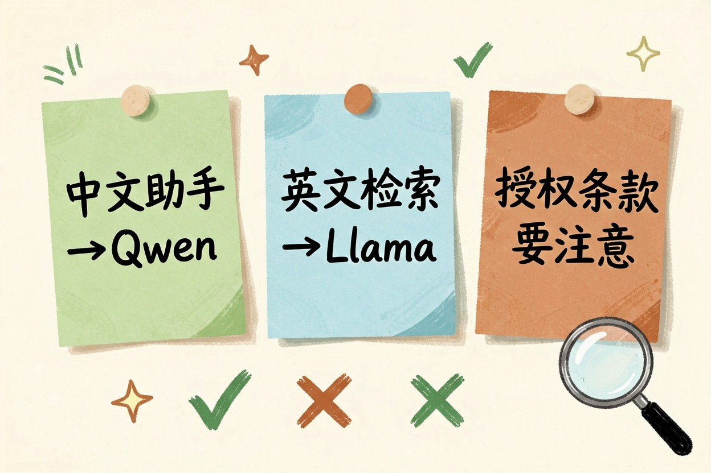
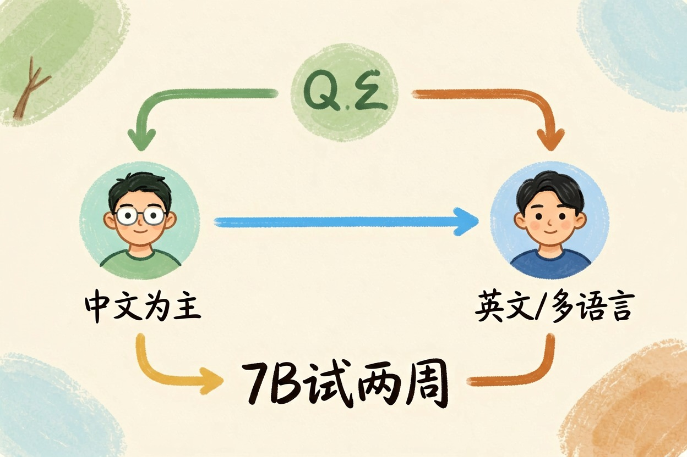
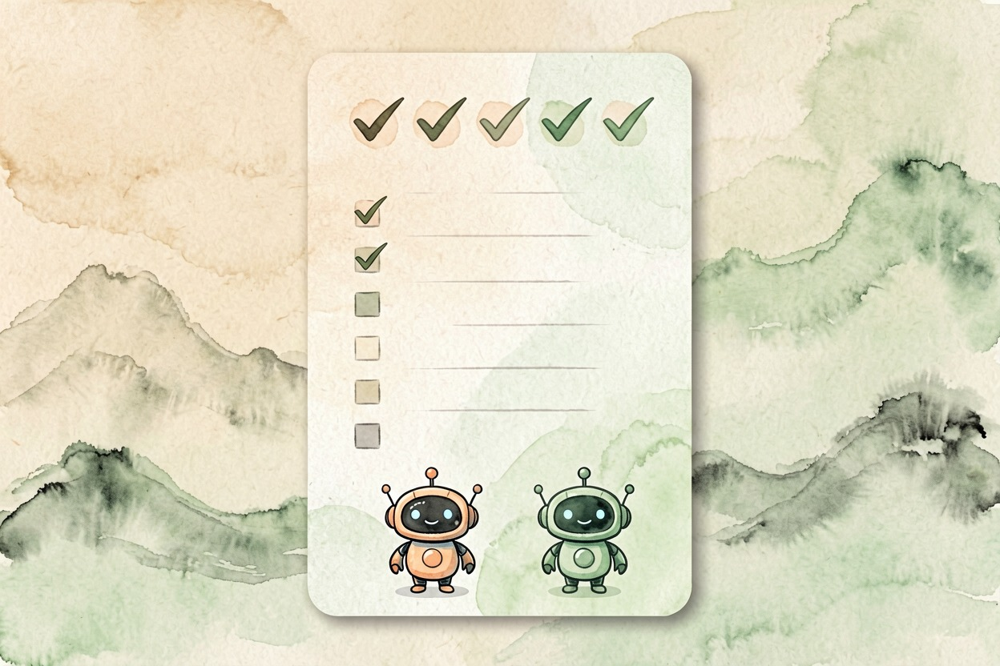

Qwen 和 Llama 怎么选？中文场景下的差别 — Learntide
挑开源大模型常卡在两家之间，这篇从中文能力和本地部署讲清怎么选。
qwen和llama哪个好

很多人在挑开源大模型时会反复问 qwen和llama哪个好。先把结论摆在前头：如果你的活儿以中文为主，比如写公众号、做客服话术、整理中文长文档，优先选 Qwen（通义千问）；如果你要做英文或多语种处理，并且想接入海外的工具生态，那就选 Llama。两者都是开放权重，都能在自己电脑上本地部署，真正的差别不在谁的参数量更大，而在训练语料和社区重心不一样，这点比榜单名次更关键，也更影响你每天用得顺不顺。
中文能力到底差在哪

Qwen 由阿里训练，中文语料占比高，处理成语、古文、本地网络梗更自然。Llama 是 Meta 出品，英文和欧洲语言更强，官方中文能力要靠社区微调版补齐。日常闲聊两者接近，但写公文、做中文长摘要、理解方言梗，Qwen 明显更稳，不容易把中文成语用错，也不容易把人名地名搞混。如果你常让模型写中文周报、润色邮件，Qwen 的语感更贴近国内习惯；Llama 在代码和英文技术文档上更顺，但中文标点、称呼容易偏西式，读着有点隔。这也是国内团队更偏向 Qwen 的原因，西式表达读多了会出戏。
谁的生态更好装

在 Ollama 里两个都能一键拉取。Qwen 的 GGUF 版本更新快，从 7B 到 72B 规格齐全；Llama 近几代对商用有限制，个人学习没问题。Qwen 在国内论坛教程多，搜报错容易找到中文答案；Llama 的英文资料更全。两者都支持量化，显存不够就拉 Q4 版本，体积能再小一半。新手建议先装 7B，跑通再换大的，别一上来就挑战满血版。部署命令长得几乎一样：
ollama pull qwen2.5:7b
ollama pull llama3.1:8b怎么选才不踩坑

先看你的用途。纯中文助手、本地知识库问答，Qwen 更省心；要做英文检索、接海外应用，Llama 更通用。另外要注意授权，Llama 的商用条款对月活有门槛，公司产品上线前要看清；Qwen 的开源协议对中文开发者更友好。别只盯着榜单分数，那些榜单大多是英文题目，Qwen 的中文优势根本体现不出来，比出来也不准，会误导你的选型判断，别等模型都跑顺了才发现不能商用。授权这块提前看一眼，比事后补救省心得多。
一个简单判断法
给你一句判断：中文为主选 Qwen，英文和多语言选 Llama。两者都能在 Ollama、vLLM 上跑，也能接聊天界面。如果你的电脑只有核显，7B 量化版也勉强能跑起来，但别指望快，真要天天用还是上独显更舒服。实在纠结就先装 7B 小模型试上两周。qwen和llama哪个好，最终看你手上的任务，而不是谁的参数更大、名字更响，小模型够用就别硬上巨无霸。

本文信息核对于 2026-08-08。AI 产品的价格、免费额度与功能变动频繁，实际以各工具官网当前说明为准。